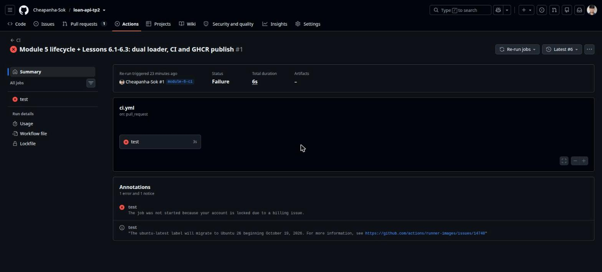
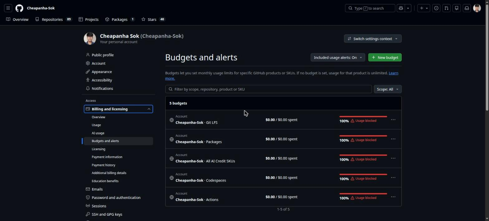
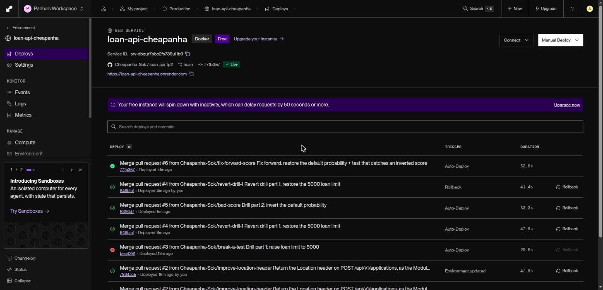
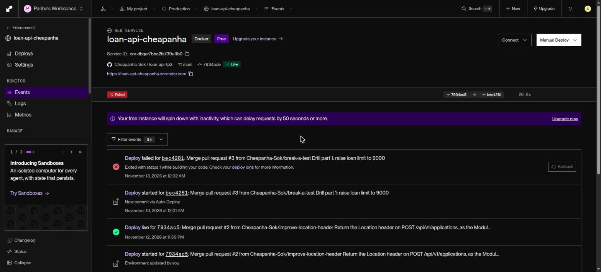
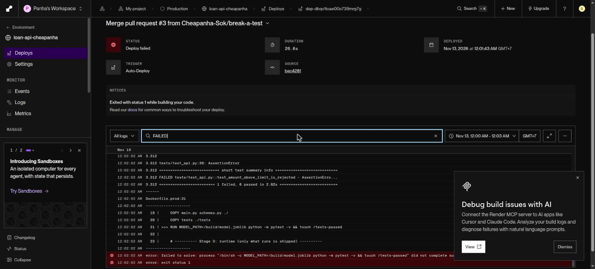
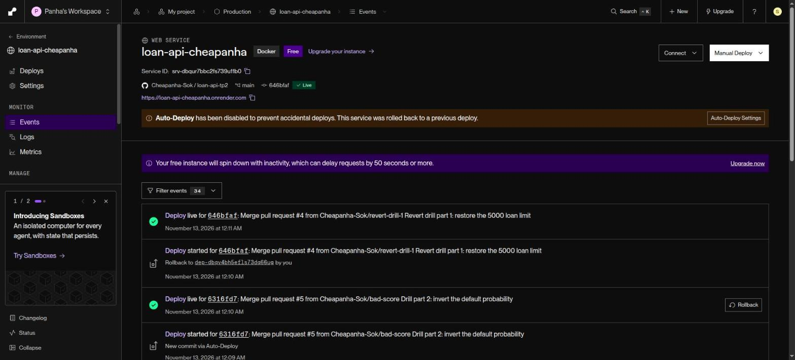

Student: Sok Cheapanha · Course: AI Engineering & Deployment, Module 6 · Date: 12–13 November 2026
| Repository | https://github.com/Cheapanha-Sok/loan-api-tp2 (public, branch main) |
|---|---|
| Live app | https://loan-api-cheapanha.onrender.com (/docs, /health) |
| Host | Render free web service, Singapore, built from Dockerfile.prod, auto-deploy on every commit to main |
| Live version at submission | git_sha 771b357 (PR #6), model 1.0.0 |
The course pipeline runs on GitHub Actions. On this account every Actions job was refused before it started:
The job was not started because your account is locked due to a billing issue.
The run (PR #1, ci.yml) was attempted 6 times on 12 Nov (the original run plus 5 re-runs, the last at 16:15 UTC); each attempt failed in under 10 s with no log. We checked the billing pages: plan GitHub Free, $0 usage, $0 of $12 included compute used, no payment method and no payment history, repository public. The only unusual setting is five account budgets at $0.00 marked "Usage blocked" (Actions, Packages, Codespaces, Git LFS, AI credits). The lock is an account flag on GitHub's side; a support request is the follow-up. Full write-up: evidence/6.7/github-actions-billing-lock.md.


Workaround (same stages, no GitHub Actions): the pipeline runs on Render's Git-backed build, which is still fully automatic: nobody ever deploys by hand.
| Course stage (GitHub Actions) | What runs instead |
|---|---|
test job | A test stage inside Dockerfile.prod: python train.py then pytest -v against the exact code and model that will ship. The runtime stage copies a marker file from it, so no green tests, no image, no deploy. |
build-and-push to GHCR | Render builds Dockerfile.prod from the repository on every commit to main (GHCR is pushed from Actions, so it is unavailable too) |
deploy (deploy hook) | Render Auto-Deploy: On Commit |
verify (/health shows the SHA) | Render's health check on /health gates every release; /health reports git_sha from RENDER_GIT_COMMIT; scripts/verify.sh waits until the live SHA equals the merged commit and prints the merge-to-live time |
Branch protection requiring test | Not possible without a CI status check. All changes still went through pull requests (#1 to #6). |
ci.yml and publish.yml stay in the repository unchanged, so the course pipeline (and branch protection) can be switched on as soon as GitHub lifts the lock.
| Requirement | Modules | Evidence | Status |
|---|---|---|---|
Live /openapi.json matches the contract | 2, 3 | §2 side-by-side comparison | Met (deliberate differences explained) |
| All tests pass in CI; main is protected | 3, 6 | §3: tests run in every Render build (8 passed); a failing test blocked a release | Partly: CI runs in the build; branch protection impossible while Actions is locked (§0) |
| Hardened production image stamped with its commit SHA | 4, 6 | §3: multi-stage, slim, non-root, health-checked image; /health returns git_sha | Met (no registry tags: GHCR blocked, Render stores the image) |
| Tracked runs, registered champion, promotion memo | 5 | §4 (from Task 5.7) | Met |
| Automatic deploy and verify on every merge | 6 | §3: deploy history and verify.sh logs | Met (verify run from the terminal, not a CI job) |
| API key in a Render env var; HTTPS graded | 6 | §5: three checks, SSL Labs A | Met |
| A deliberate bad release caught or rolled back | 6 | §6: part 1 stopped by tests; part 2 rolled back in 48 s; new test added | Met |
| Drift monitoring with an alert threshold | 5 | §4 (drift chart and alert plan) | Met |
/openapi.json vs the Module 2 contractContract: Task 2.7 loan-api.yaml (OpenAPI 3.0.3). Live: https://loan-api-cheapanha.onrender.com/openapi.json (saved as evidence/6.7/live-openapi.json).
| Contract (Module 2) | Live service | Result |
|---|---|---|
POST /applications: 201 + Application + Location, 422 on a business rule | POST /api/v1/applications: 201 + Application, 422 when amount_usd > 5000; Location added in PR #2 | Match (after PR #2) |
GET /applications (paged ApplicationList, next_cursor) | GET /api/v1/applications returns a plain list | Changed on purpose: in-memory store, no pagination yet |
GET /applications/{application_id}: 200 / 404 | same path under /api/v1: 200 / 404 | Match |
PATCH /applications/{application_id} (approve / reject, 409) | not implemented | Deferred: manager dashboard out of scope |
GET /borrowers/{borrower_id}/applications | not implemented | Deferred: needs the PostgreSQL store |
POST /applications/{id}/predictions | POST /api/v1/predictions scores features directly; each application embeds its prediction | Changed on purpose (Module 3 design) |
ApplicationCreate requires borrower_id, amount_usd, term_months | also requires the three other model features | Changed on purpose: the model needs all five |
Limits: amount_usd 100–5000, term_months ∈ {3, 6, 12, 18, 24} | identical (schemas.py) | Match |
| Bearer token on every endpoint | X-API-Key on every /api/ route; /health, /docs open | Changed on purpose: one service key |
| — | GET /health (status, model_version, git_sha) | Added for Render's health check and verify |
Pipeline: pull request → merge to main → Render clones the commit → Dockerfile.prod stage 1 installs packages and trains the model → stage 2 runs pytest → stage 3 builds the slim non-root runtime image → Render starts it and waits for /health → traffic switches → verify.sh confirms the live git_sha.
The one real improvement (PR #2): the contract requires POST /applications to return a Location header; the service did not. PR #2 added it with a test assertion.
$ APP_URL=https://loan-api-cheapanha.onrender.com scripts/verify.sh
Waiting for https://loan-api-cheapanha.onrender.com to report 7934ac540ec17bdb248847e974d4994ca9f30dca (merged 2026-11-12 23:50:01)
Live version is '268c66d374f2dcff511ac7b7219f70d14f460af0', waiting (1/45)
Live version is '268c66d374f2dcff511ac7b7219f70d14f460af0', waiting (2/45)
Live version is '268c66d374f2dcff511ac7b7219f70d14f460af0', waiting (3/45)
Deployed and healthy: 7934ac540ec17bdb248847e974d4994ca9f30dca
Merge to live: 1 min 5 s
$ curl -si -X POST $APP/api/v1/applications -H 'content-type: application/json' -d '{"borrower_id":1042,"amount_usd":1500,...}'
HTTP/2 201
location: /api/v1/applications/7781
Merge-to-live times (every merge, measured by verify.sh from the merge commit to the live git_sha):
| PR | Change | Merge to live |
|---|---|---|
| #2 | Location header (the improvement) | 1 min 5 s |
| #3 | drill part 1, broken rule | never live (build failed at test) |
| #4 | revert of #3 | 1 min 4 s |
| #5 | drill part 2, inverted score | 1 min 5 s |
| #6 | fix forward + new test | 1 min 10 s |

Hardened image, stamped with its commit: Dockerfile.prod is multi-stage (python:3.12-slim), applies Debian security updates, runs as non-root appuser (uid 10001), ships only main.py, schemas.py, the venv and the model (no MLflow, no tests, no secrets), and has a HEALTHCHECK. Locally it uses about 141 MiB, well under Render's 512 MB. /health reports the commit:
{"status":"ok","model_version":"1.0.0","git_sha":"771b35729380301e28e23b13a3d323ee0badbeda"}
From report/submission_sokcheapanha_5.7.pdf in the repository:
- Eight tracked runs, three model types (logistic regression, random forest, gradient boosting), each logging parameters, AUC, recall, precision, the ROC curve and the model with its signature.
- Registered model loan-default: version 1 (balanced logistic regression, recall 0.865, AUC 0.923) is @champion; version 2 (balanced random forest, depth 8, recall 0.788, precision 0.738) is @challenger.
- Promotion memo: recall is the primary metric because a missed defaulter (lost principal) costs far more than a false alarm (a manual review). The champion catches 86.5% of defaulters against 72–79% for the alternatives at essentially the same AUC.
- The API in production loads model.joblib trained inside the image (version 1.0.0, the same balanced logistic regression, test AUC 0.923); with MLFLOW_TRACKING_URI set it loads models:/loan-default@champion instead (Lesson 6.1).

Drift monitoring and alert plan: a 14-day simulated drift run (incomes falling $8/day) logged PSI per feature and the mean predicted default.

| Signal | Threshold | Action |
|---|---|---|
PSI monthly_income_usd | Warn > 0.1 for 2 days (fired day 7) | Notify the team, check field reports |
PSI monthly_income_usd | Alert > 0.2 for 2 days (fired day 9) | Retrain, register a new @challenger, compare, promote |
| Mean predicted default | Alert > 0.40 for 2 days (fired day 10) | Tell credit managers, review approval limits |
| Recall on arrived outcomes | Alert if < 0.80 (monthly) | Retrain or promote the challenger |
The API key is generated with secrets.token_urlsafe(32) and stored only in Render → Environment → API_KEY (and the student's password store). It is in no file, no image and no log.
# Lesson 6.6 checks against https://loan-api-cheapanha.onrender.com (2026-11-12 17:00:16 UTC)
$ curl -s $APP/health # open: always 200
{"status":"ok","model_version":"1.0.0","git_sha":"7934ac540ec17bdb248847e974d4994ca9f30dca"} -> HTTP 200
$ curl -s $APP/api/v1/applications # no key: 401
{"detail":"Missing or invalid API key"} -> HTTP 401
$ curl -s -H "X-API-Key: wrong" $APP/api/v1/applications # wrong key: 401
{"detail":"Missing or invalid API key"} -> HTTP 401
$ curl -s -H "X-API-Key: $KEY" $APP/api/v1/applications # with the key: 200
[] -> HTTP 200
SSL Labs: overall grade A on both Render endpoints (216.24.57.16 and 216.24.57.18); TLS 1.2 and TLS 1.3 only; certificate issued by Google Trust Services (WE1), valid until 20 Dec 2026 and renewed automatically by Render (evidence/6.7/step4-ssllabs.json).
No secrets anywhere: the key string occurs 0 times in the full Git history and the working tree; no deploy-hook URL, .env, database or model file is committed; the image's environment contains only MODEL_PATH and GIT_SHA; GitGuardian on PR #1 reported "No secrets detected".
PR #3 changed le=5000 to le=9000 in schemas.py and was merged (bec4281, 17:01:40 UTC). Render's build ran the test stage and failed; the release never reached users and production stayed on 7934ac5.
FAILED tests/test_api.py::test_amount_above_limit_is_rejected - AssertionError
1 failed, 6 passed in 2.62s
error: failed to solve: process "/bin/sh -c MODEL_PATH=/build/model.joblib python -m pytest -v && touch /tests-passed" did not complete successfully: exit code 1
$ curl -s $APP/health -> {"status":"ok","model_version":"1.0.0","git_sha":"7934ac5..."}


PR #4 reverted it (live in 1 min 4 s).
PR #5 made score return round(1 - probability, 3). All 7 tests still passed, so it shipped.
| Time (UTC) | Event | Safe applicant (1500 USD, 12 m, income 350, 0 late) | Risky applicant (5000 USD, 3 m, income 200, 4 late) |
|---|---|---|---|
| 17:08:07 | Before (live 646bfaf) | 0.095, low | 1.0, high |
| 17:09:04 | PR #5 merged | ||
| 17:10:09 | Bad release live (6316fd7), merge to live 1 min 5 s | 0.905, low (probability and band disagree) | 0.0, high |
| 17:10:48 | Rollback clicked in Render's Events tab (to 646bfaf) | ||
| 17:11:36 | Recovered, rollback to recovered 48 s | 0.095, low | 1.0, high |
| 17:14:52 | Fix forward PR #6 live (771b357, 1 min 10 s) | 0.095, low | 1.0, high |
The wrong version was live for 1 min 27 s in total. Render disables auto-deploy after a rollback; it was switched back to On Commit before the fix was merged.

The real fix: a test that would have caught it (PR #6).
def test_risky_applicant_scores_higher_than_safe_applicant(client):
safe = client.post("/api/v1/predictions", json=GOOD).json()
risky = client.post("/api/v1/predictions", json=RISKY).json()
assert risky["default_probability"] > safe["default_probability"]
assert safe["risk_band"] == "low" and safe["default_probability"] < 0.2
assert risky["risk_band"] == "high" and risky["default_probability"] >= 0.5
# re-applying the inverted line locally: FAILED tests/test_api.py::test_risky_applicant_scores_higher_than_safe_applicant 1 failed, 7 passed # with the fix: 8 passed
Because the tests run inside the Docker build, the same mistake can no longer reach production.
The 5-minute slides are submitted separately (slides_sokcheapanha_6.7.pdf): architecture, one design decision, one trade-off, and what comes next.
| Criterion | How it is met |
|---|---|
| Every requirement met, with evidence | §1 table; partial items explained by the GitHub billing lock (§0) |
| Deployed only by the pipeline, never by hand | Every deploy in Render's history is Auto-Deploy from a merge, plus the drill rollback (screenshot §3). No manual deploy, no docker push, no deploy hook was used. |
| No secrets in the repository, the images or the logs | §5 scan: 0 occurrences; key only in Render's environment |
| The bad release was caught or rolled back, and a test now prevents it | §6: part 1 blocked by tests; part 2 rolled back in 48 s; new test fails on the bug |
Teardown (after assessment, Lesson 6.7 Hands-on 2): delete the Render service, remove the API_KEY, keep the repository as a portfolio.